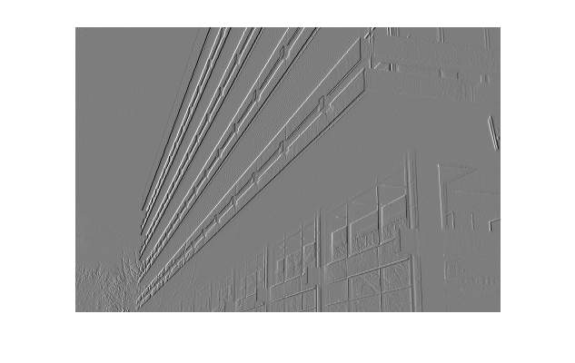
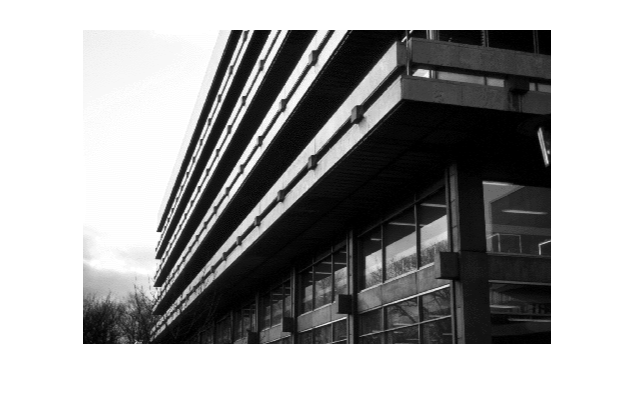
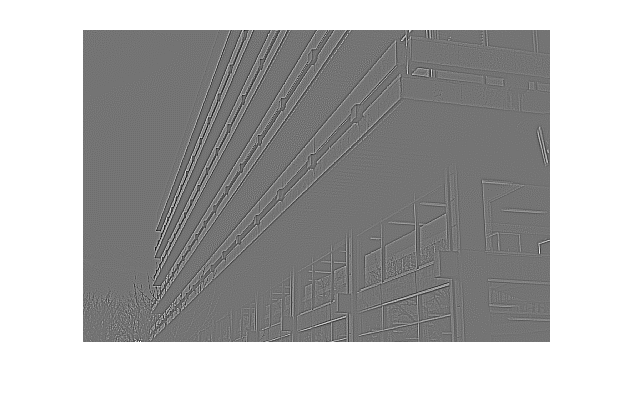
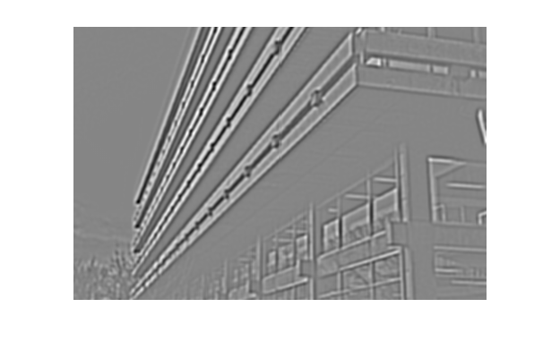
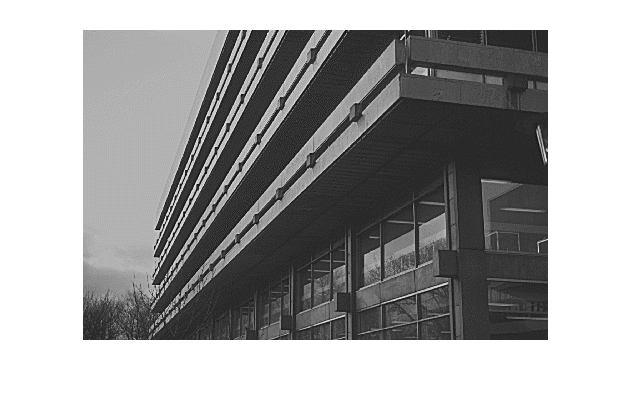

Demo of convolution with some simple masks
David Young
This demo contains code to explore the effects of some simple convolution masks.
Contents
Setup
This assumes that the Sussex vision library is in your Matlab path.
First, read in an image, and look at it:
Image = teachimage('edin_lib.bmp');
imshow(Image);
Horizontal differencing
Make a horizontal differencing mask, convolve it with the image, and display the result:
mask = [1 -1];
Imout = convolve2(Image, mask, 'valid');
imshow(Imout, []);
 Compare input and output array sizes
The 'valid' option means that the convolution output has to be smaller than the input image. This prints the two sizes: check that you understand why you get exactly the difference you see below.
input_size = size(Image) output_size = size(Imout)
input_size = 314 469 output_size = 314 468
Make a vertical differencing mask and see what it does
This is an exercise for you. It's a one-character change from the code for horizontal differencing.
Simple smoothing
A minimal 2-pixel mask - smooths by averaging neighbours in a row. You might have to look closely to see the effect it has on the image - the trees at the bottom left are the most obvious place to see it.
mask = [0.5 0.5]
Imout = convolve2(Image, mask, 'valid');
imshow(Imout, []);
mask =
0.5000 0.5000
 A bigger smoothing mask
A larger mask, but it still takes a simple average.
mask = ones(9)/(9*9)
Imout = convolve2(Image, mask, 'valid');
imshow(Imout, []);
mask =
Columns 1 through 7
0.0123 0.0123 0.0123 0.0123 0.0123 0.0123 0.0123
0.0123 0.0123 0.0123 0.0123 0.0123 0.0123 0.0123
0.0123 0.0123 0.0123 0.0123 0.0123 0.0123 0.0123
0.0123 0.0123 0.0123 0.0123 0.0123 0.0123 0.0123
0.0123 0.0123 0.0123 0.0123 0.0123 0.0123 0.0123
0.0123 0.0123 0.0123 0.0123 0.0123 0.0123 0.0123
0.0123 0.0123 0.0123 0.0123 0.0123 0.0123 0.0123
0.0123 0.0123 0.0123 0.0123 0.0123 0.0123 0.0123
0.0123 0.0123 0.0123 0.0123 0.0123 0.0123 0.0123
Columns 8 through 9
0.0123 0.0123
0.0123 0.0123
0.0123 0.0123
0.0123 0.0123
0.0123 0.0123
0.0123 0.0123
0.0123 0.0123
0.0123 0.0123
0.0123 0.0123
A simple centre-surround mask
A rough approximation to the "Laplacian" operation. (Strictly, minus the Laplacian.)
mask = [-1 -1 -1; -1 8 -1; -1 -1 -1]
Imout = convolve2(Image, mask, 'valid');
imshow(Imout, []);
mask =
-1 -1 -1
-1 8 -1
-1 -1 -1
 The Laplacian of Gaussian operation
Combines centre-surround differencing and smoothing. We use minus the fspecial result to get a mask with a positive centre.
mask = -fspecial('log', 10, 2); Imout = convolve2(Image, mask, 'valid'); imshow(Imout, []);
An arbitrary 2-D mask
This does a simple form of "edge enhancement", similar to the "sharpening" operation sometimes found in graphics packages, by taking away a local average from each pixel value.
mask = -ones(5)/25;
mask(3,3) = 2
Imout = convolve2(Image, mask, 'valid');
imshow(Imout, []);
mask = -0.0400 -0.0400 -0.0400 -0.0400 -0.0400 -0.0400 -0.0400 -0.0400 -0.0400 -0.0400 -0.0400 -0.0400 2.0000 -0.0400 -0.0400 -0.0400 -0.0400 -0.0400 -0.0400 -0.0400 -0.0400 -0.0400 -0.0400 -0.0400 -0.0400
Experimenting
You can download this document and then extract the original M-file with Matlab's grabcode function. You can then edit it for experimentation. (Functions from the Sussex vision library are only available to Sussex students and staff.)
Try constructing some masks of your own and seeing what they do. Try different kinds of patterns, such as line detectors.
See also convolution_demo.
Copyright University of Sussex, 2006.